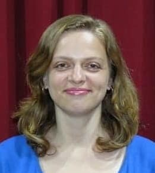
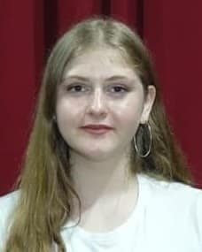
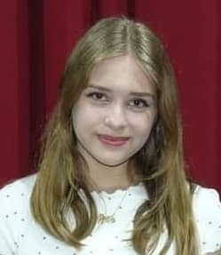

София Маковкина-Левин

Стас Мадичинов
-декоратор, актер. Закончил в 1987 году техническое училище по специальности модельщик по деревянным моделям. Еще малышом вместе с дедушкой любил мастерить. С детских лет увлекался театром и участвовал в художественной самодеятельности. С 2010 по 2018 год был актером Народного театра «Встреча» в городе Гомель(Белоруссия). Там им были сыграны роли: Леонида в « Ретро», Сергей (Баба Шанель),Бальзаминов (Женитьба Бальзаминова) и другие. Репатриировался в Израиль в 2018 году. В 2019 прошел кастинг в театр «МЕНОРА» и с тех пор сыграл много ролей в спектаклях и детских сказках-мюзиклах. Технические знания и умения сделали его незаменимым для театра. Его руками выполнены почти все декорации к спектаклям.

Надя Аношин

Дима Малкович
ДИМА МАЛКОВИЧ - художник. Закончил Приднепровскую государственную академию строительства и архитектуры в 1999г. по специальности инженер-строитель. Работал в городе Днепропетровск (Украина) инженером- проектировщиком газоснабжения. Репатриировался в Израиль в 1918году. В 1918 году познакомился с коллективом театра «Менора», влюбился в кисточки и с тех пор увлекся живописью. Художественные работы Димы стали неотьемлемой частью каждого спектакля театра. Лучшие его картины и скульптуры были выставлены на встрече коллектива со зрителем... Творчество художника сопровождает все постановки коллектива от серьезных спектаклей («Варшавская мелодия», «Хочу сниматься в кино»,»Рандеву с театром» и др.) до детских сказок(«Ветерок спасает праздник» и др.).

Лена Михайлова

Юля Финкель
Закончила Санкт Петербургский Университет ( 2010 — 2014) отделение Актер драматического театра и кино. Служила актером в Государственный Театр Драмы г. Черемхово, Иркутской области. Сыграла роли в спектаклях: Надежда (« Домик на окраине»), Виктория (« Счастье мое»). Репатриировалась в Израиль в 2015г. Служила в театре « Менора» и сыграла ведущие роли во многих спектаклях коллектива: Бабочка (« Эти свободные бабочки»), Клоунесса (« Рандеву с театром»), Снегурочка (« Новогодние сказки»), Гелена (« Варшавская мелодия») и др.

Алекс Альтерман

Таня Дьяченко

Боря Ерохин

Соня Полойко

Егор Шаров

Таня Супорткина

Аня Вайнберг

Оля Тарасова

Илона Ослон

Алла Гавриэлов

Лена Подрецкая

Саша Лев
АЛЕКСАНДР ЛЕВ - звуко- видео-инженер ( 1960 ) Закончил в 1981г. Техникум по профессии механик производственных мощностей (Киев). Изучал профессии строителя, токаря, слесаря, сварщика, механика и др. Закончил музыкальную школу по классу саксофон, кларнет. Играл в оркестре. Работал в « Зеленом театре» г. (Киев) диджеем. Репатриировался в 1992году. Закончил колледж ( г. Ашкелон ) по специальности программист СНС. Изучал 2003-2004гг. Программы Солидворк, Металикс, и др. С 2020 года является звуко- видео- инженером в театре «Менора». Его знаниями и умением организованно музыкально - световое оформление театра.


.jpg)